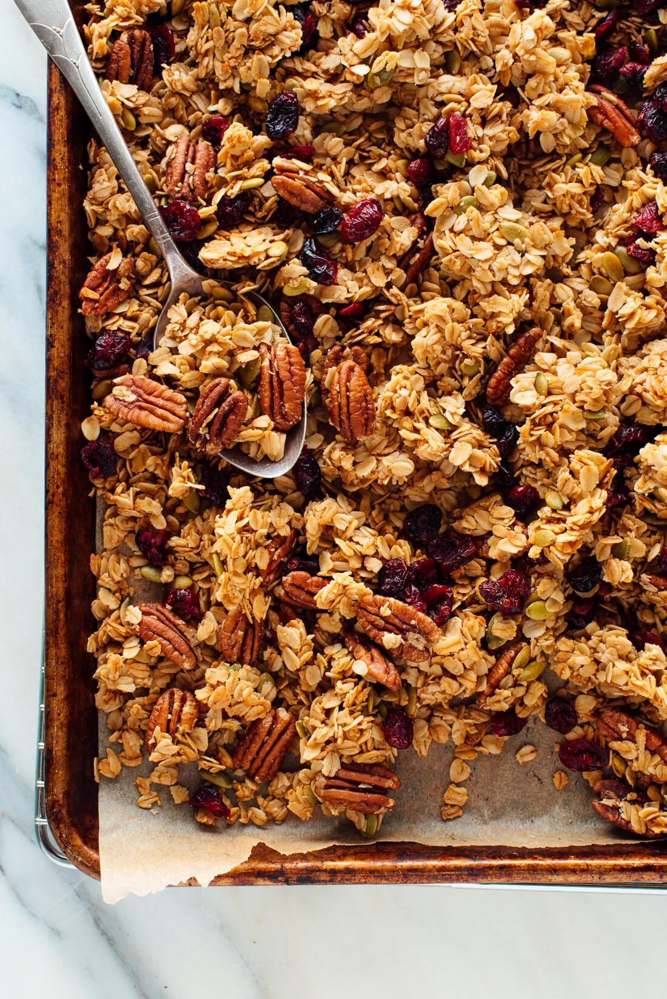

Granola

Homemade granola is rather easy when it comes to ingredients, but is a bit
trickier when you're looking to replicate that store-bought brand you love. One
of the finer points of a good granola is the satisfying crunch that some great
brands have.
We'll replicate this crunch by adding some enhancements to most granola recipes,
cooking at a lower temperature for a longer period of time, and letting the granola
cool on the sheet pan to form those delicious, crunchy clumps.
Ingredients
- 4 cups rolled or old-fashioned oats
- 1.5 cups chopped or diced pecans
- 1 teaspoon fine-grain sea salt
- .5 teaspoon ground cinnamon
- .5 cup melted coconut oil
- .5 cup maple syrup or honey
- 1 teaspoon vanilla extract
- 2 egg whites
- optional: .5 cup chocolate chips after granola cools
Steps
- Preheat oven to 300 degrees Fahrenheit, and line a large, rimmed baking
sheet with parchment paper.
- In a large mixing bowl, combine the oats, nuts, salt and cinnamon. Stir
to blend.
- Whisk egg whites until they get frothy
- Pour in the oil, maple syrup, vanilla, and egg whites. Mix well,
until all oats are lightly coated.
- Pour granola onto parchment-lined baking sheet.
- Bake until lightly golden, about 1 hour.
- Remove baking sheet, and allow granola to cool on sheet. Don't stir!
- Once cool, pour granola and chocolate chips into storage container.